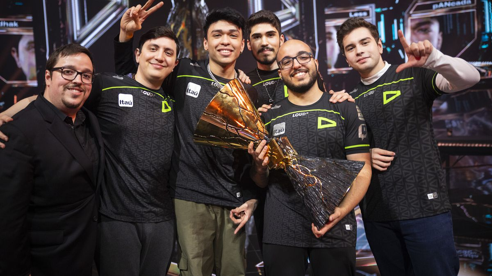

Conceito do jogo
O que é?
Valorant é um jogo tático de tiro composto por uma competição de 5 contra 5 com o objetivo de detonar/desarmar a spike ou eliminar todos os participantes da equipe adversária. O jogo é composto por mais de 20 agentes diferentes e cada um possui uma temática e habilidades individuais.
Antes de começar a primeira rodada, você escolherá um personagem dentre um grupo de Agentes, cada um com sua própria função e habilidades especiais que se complementam e ajudam a vencer a partida.
Cada mapa traz uma forma diferente de colocar seu estilo de jogo em prática. Demonstre sua criatividade e mecânica de tiro a cada embate.
Biblioteca de imagens dos mapas do Valorant
Mapa Ascent
Mapa Bind
Mapa Split
Mapa Breeze
Mapa Sunset

Mapa Lotus
Times brasileiros
Nosso país está se tornando uma potência cada vez mais forte nos jogos de FPS. Recentemente, a Loud sagrou-se campeã mundial, mas existem outras equipes que se destacam tanto a nível nacional quanto internacional. Melhores times do Brasil de Valorant.
| Nome da organização | Composição Atual | Desempenho Atual | Titulos e Conquistas |
|---|---|---|---|
| Loud | Less, Qck1, Saadhak, Tuyz e Cauanzin | Desclassificado | Champions 2022 |
| Furia | Khalil, Mwzer0a, Havoc, Kon4n e Nozwerr | Desclassificado | MEG 2023 |
| MIBR | Jzz, Frz, RgLM, Artzin e Mazin | Desclassificado | VCT 2023 |
Loud campeã do Champions
Um dos fatores para os resultados da organização brasileira em questão de espectadores é a performance do esquadrão brasileiro nos últimos anos. Campeã do VALORANT Champions 2022, mundial da modalidade, a equipe continuou sua boa caminhada em 2023 sendo vice-campeã do VCT LOCK//IN, campeã da 1ª edição do VCT Américas e ficou em terceiro lugar no VALORANT Champions 2023.
